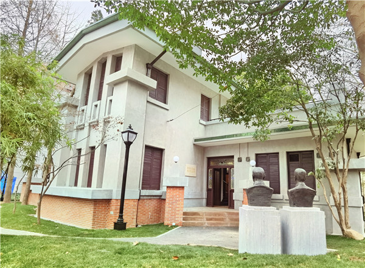
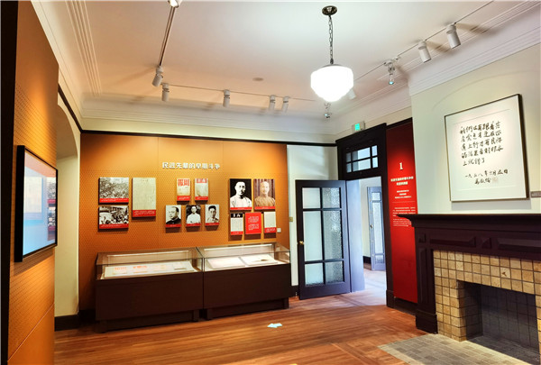
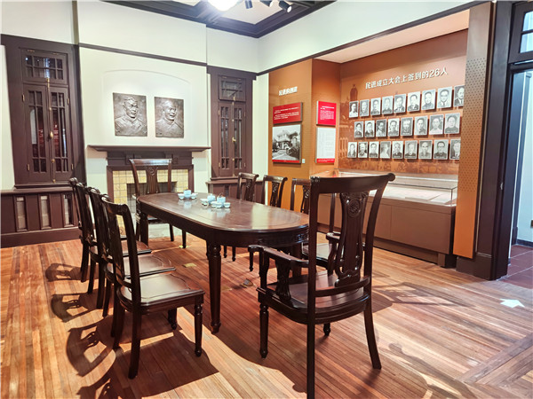

成立会址纪念馆1

成立旧址纪念馆2

成立旧址纪念馆3
民进成立旧址纪念馆位于上海市黄浦区陕西南路235号明复图书馆会心楼。1945年12月30日，中国民主促进会在上海爱麦虞限路中国科学社（现为明复图书馆）正式宣告成立。1999年6月17日，在卢湾区图书馆（现为明复图书馆）举行了民进成立旧址挂牌仪式。2005年，民进成立大会会址（现为民进成立旧址纪念馆）被确认。2019年，立项启动民进成立旧址纪念馆建设，并于2020年12月30日落成开馆。纪念馆分为四个展厅，通过展板、展品、二维码语音导览、电子屏等形式展示了近200份图文、展品等史料，以时间为顺序、重大历史事件为载体，回顾了民进的成立与发展，以及与中国共产党风雨同舟、肝胆相照、通力合作的光辉历史。馆内收录有在民进成立大会签到的齐全的26人照片、原中国科学社小楼照片等20余份首次展出的珍贵史料。